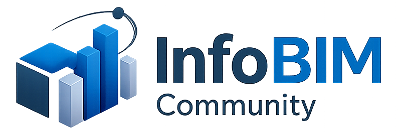

O contexto fica fragmentado por tipo de arquivo.
📁 Drawings📁 Documents📁 Emails📁 Photos📁 Schedules

Local-first engineering information
Sem mover o projeto para outra plataforma. O InfoBIM mantém os arquivos onde estão e cria uma visão operacional que conecta 5W2H, desenhos, documentos, comunicações, fotos e anotações.
Related · Suggested · Found
▾ 01_Drawings
⌁ routing-plan.dwg
⌁ rack-layout.pdf
▸ 02_Documents
▸ 03_Communication
Uma nova unidade de trabalho
Um WorkStream é uma frente de trabalho nomeada, limitada ao projeto e estruturada por 5W2H. Ele reúne texto editável, relações semânticas, inventário e uma interface HTML viva.
Anatomia 5W2H
Escopo, entregáveis e descrição da intervenção.
Motivadores, restrições, decisões e resultado esperado.
Áreas, sistemas, edifícios, salas e interfaces.
Datas, estágios, marcos e janelas de acesso.
Responsáveis, revisores, fornecedores e interessados.
Método, sequência, logística e controles.
Custo, esforço, quantidades e restrições comerciais.
A experiência do usuário
Cada dimensão oferece Drawings, Documents, Communication e Photos. Em cada área, o usuário alterna entre Related, Suggested e Found.
Navegue pelo inventário RO-Crate sem varreduras silenciosas a cada clique.
Visualize PDFs, imagens e comunicações; o recurso autoritativo continua intacto.
Crie ou remova relações semânticas sem duplicar nem mover arquivos.
Registre notas espaciais sem modificar o desenho ou a imagem original.
A demonstração convincente
Comece pela pasta comum.
Abra uma frente real com 5W2H.
Localize uma evidência catalogada.
Relacione-a à pergunta que sustenta.
Abra desenho, e-mail, foto ou documento.
Mostre que tudo permanece junto no projeto.
Como funciona
A página não é o WorkStream. Ela é a fachada operacional sobre dados editáveis, inventário, relações e recursos locais.
Implementação e demonstração
O InfoBIM pode ser demonstrado e implantado sobre os arquivos que sua equipe já produz, preservando ambiente, autoria e julgamento técnico.